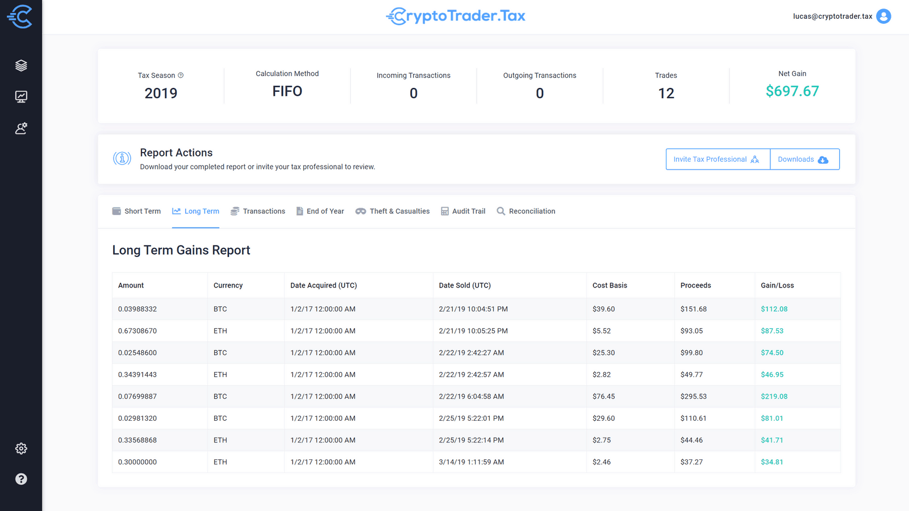

Hey crypto family,
Every month, we send an email that’s designed to keep you
up-to-date on crypto tax news. And because we like having fun, we
also include one crypto meme that made our team laugh. So, sit
back, relax, and enjoy this newsletter (and don’t miss out on this
month’s product tip that may help you save thousands of dollars
on your tax bill!)
The infrastructure bill is passing - and it has big implications on crypto.
This month, the House passed an infrastructure
bill that adds more tax reporting provisions for
cryptocurrency brokers. You may remember
prominent crypto companies lobbying against an
earlier version of the bill a few months ago — but
some experts say that the final form has even
worse implications for the crypto ecosystem.
Read More
Help us build a better tax product!
When it comes to building our product, nothing is more valuable than the
opinions of our loyal customers. That’s why we’ve decided to create an
exclusive Facebook group where you can share your feedback. We’ll show you
sneak peeks of how our product is changing and give you the opportunity to tell
us how we can improve. We encourage all of our customers to join!
Crypto tax live session
Every month, we sit down with Jordan Bass, our
Head of Tax Strategy, a Certified Public
Accountant, and a Tax Attorney. This month, he’ll
break down the crypto tax implications of the new
infrastructure bill and what it means for investors
like you. He’ll also take some time to answer
questions from the audience!
11/29 at 12PM CT
Product tip of the month
In last month’s newsletter, we covered how the wash sale rule may be coming to
cryptocurrency starting in 2022. If you’re looking to find your tax-loss harvesting
opportunities before the end of the year, check out the ‘Tax-Loss Harvesting’
tab in your tax report. We put together this gif to help you find it!

Crypto meme of the month
This month’s meme is dedicated to all the cryptocurrency true believers out
there who continue HODLing even when their friends and family tell them to
sell. (If you want more crypto memes, follow us on Twitter!)